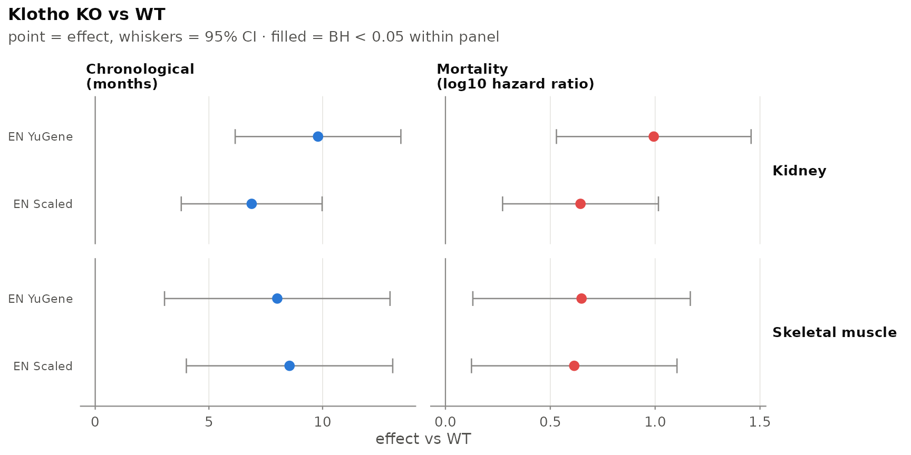
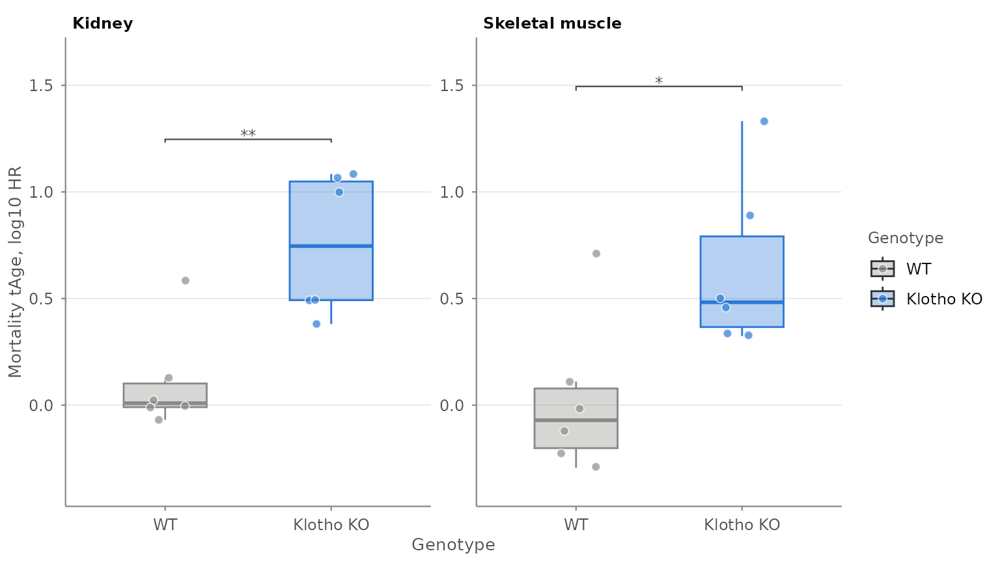

Transcriptomic age from bulk RNA-seq with tAge
Gladyshev Lab
Source:vignettes/tage-bulk.Rmd
tage-bulk.RmdOverview
tAge applies the transcriptomic clocks from Tyshkovskiy et
al. (2026), Nature to bulk RNA-seq data, predicting
chronological age (in age units) and expected
mortality (as a log10 hazard ratio).
The workflow: build an ExpressionSet, preprocess it, and
predict.
1. Build an ExpressionSet
We use the mouse example data bundled with the package (genes × samples raw counts, plus sample metadata).
exprs_data <- load_example_expression_data()
metadata <- load_example_metadata()
eset <- make_ExpressionSet(exprs_data, metadata, verbose = FALSE)
eset
#> ExpressionSet (storageMode: lockedEnvironment)
#> assayData: 57010 features, 24 samples
#> element names: exprs
#> protocolData: none
#> phenoData
#> sampleNames: Klo93K Klo94K ... RNA_122M (24 total)
#> varLabels: Mouse.ID Genotype Sex Tissue
#> varMetadata: labelDescription
#> featureData: none
#> experimentData: use 'experimentData(object)'
#> Annotation:2. Preprocess
tAge_preprocessing() filters low-expressed genes, maps
them to the mouse Entrez gene space (the identifier type is detected),
RLE-normalises, log-transforms, scales (per sample), applies the YuGene
transform, aligns to the clock gene list, and centres the data.
The example holds two tissues. The clocks were trained on expression
centred within each dataset and tissue against matched controls, so we
preprocess and centre each tissue on its own wild-type samples
(split_by), and keep genes seen in at least 25% of samples,
as the paper did for this dataset.
tAge_eset <- tAge_preprocessing(
eset,
species = "mouse",
split_by = "Tissue",
control_group_column = "Genotype",
control_group_label = "WT",
percent_threshold = 25,
verbose = FALSE
)
#> calcNormFactors has been renamed to normLibSizes
#> calcNormFactors has been renamed to normLibSizes
names(tAge_eset)
#> [1] "RLE_normalized" "log_transformed" "scaled" "scaled_diff"
#> [5] "yugene" "yugene_diff"Prediction uses the scaled_diff and
yugene_diff representations. The species is recorded in
these objects, so predict_tAge() does not need it.
3. Browse and download clocks
The published clocks live on Zenodo; list them from R (reads the bundled registry):
head(list_clocks(type = "EN", outcome = "Mortality"))
#> filename type outcome
#> 1 EN_Mortality_Mouse_Multitissue_scaleddiff.pkl EN Mortality
#> 2 EN_Mortality_Mouse_Multitissue_yugenediff.pkl EN Mortality
#> 3 EN_Mortality_Multispecies_Multitissue_scaleddiff.pkl EN Mortality
#> 4 EN_Mortality_Multispecies_Multitissue_yugenediff.pkl EN Mortality
#> 5 EN_Mortality_Rodents_Liver_scaleddiff.pkl EN Mortality
#> 6 EN_Mortality_Rodents_Liver_yugenediff.pkl EN Mortality
#> species tissue scaling lifespan_scaled
#> 1 Mouse Multi-Tissue Scaled FALSE
#> 2 Mouse Multi-Tissue YuGene FALSE
#> 3 Multispecies Multi-Tissue Scaled FALSE
#> 4 Multispecies Multi-Tissue YuGene FALSE
#> 5 Rodents Liver Scaled FALSE
#> 6 Rodents Liver YuGene FALSEdownload_clocks() fetches a chosen set and returns a
path column:
clocks <- list_clocks(type = "EN", outcome = "Mortality",
species = "Multispecies", tissue = "Multi-Tissue")
clocks <- download_clocks(clocks, dest_dir = "clocks")
model_paths <- list(
scaled_diff = clocks$path[clocks$scaling == "Scaled"],
yugene_diff = clocks$path[clocks$scaling == "YuGene"]
)4. Predict
predict_tAge() takes one model per normalisation, so
applying several clocks means one call per outcome. Renaming the columns
as we go keeps them apart and builds the clock table the figures
use.
Sys.setenv(RETICULATE_PYTHON = Sys.getenv("RETICULATE_PYTHON")) # use your env
predict_one_outcome <- function(outcome) {
cl <- .clocks[.clocks$outcome == outcome, ]
res <- predict_tAge(
tAge_eset,
model_paths = list(scaled_diff = cl$path[cl$scaling == "Scaled"],
yugene_diff = cl$path[cl$scaling == "YuGene"]),
mode = "EN"
)
out <- res[, c("scaled_diff_EN_tAge", "yugene_diff_EN_tAge"), drop = FALSE]
names(out) <- paste0(outcome, c("_Scaled", "_YuGene"))
out
}
results <- cbind(
Biobase::pData(tAge_eset$scaled_diff),
predict_one_outcome("Chronological"),
predict_one_outcome("Mortality")
)
# The table the figures use to label rows and pick units per outcome.
clocks_meta <- data.frame(
filename = c("Chronological_Scaled", "Chronological_YuGene",
"Mortality_Scaled", "Mortality_YuGene"),
name = c("EN Scaled", "EN YuGene", "EN Scaled", "EN YuGene"),
outcome = rep(c("Chronological", "Mortality"), each = 2),
stringsAsFactors = FALSE
)
head(results[, c("Genotype", "Tissue", "Mortality_Scaled")])
#> Genotype Tissue Mortality_Scaled
#> Klo93K WT Kidney 0.022934135
#> Klo94K WT Kidney -0.068923471
#> Klo95K WT Kidney 0.127629789
#> Klo96K WT Kidney 0.584237945
#> Klo99K WT Kidney -0.011345993
#> Klo100K WT Kidney -0.004835266The mortality values are log10(hazard ratio) — small
numbers centred near zero, not ages. See below.
5. Compare groups
tage_compare_groups() is the test behind every figure in
the package: estimated marginal-mean contrasts of
tAge ~ group + covariates, one model per stratum, as in the
paper’s clock analyses.
stats <- tage_compare_groups(
results,
value_columns = clocks_meta$filename,
group_column = "Genotype",
reference_group = "WT",
split_by = "Tissue",
p_adjust = "BH",
p_adjust_scope = "across_columns" # correct across the clocks in one panel
)
stats[, c("value_column", "split", "group2", "estimate",
"ci_low", "ci_high", "p_adjusted", "label")]
#> value_column split group2 estimate ci_low ci_high
#> 1 Chronological_Scaled Kidney Klotho KO 6.8815265 3.7835072 9.979546
#> 2 Chronological_Scaled Skeletal muscle Klotho KO 8.5465910 4.0084004 13.084782
#> 3 Chronological_YuGene Kidney Klotho KO 9.7994616 6.1556913 13.443232
#> 4 Chronological_YuGene Skeletal muscle Klotho KO 8.0065956 3.0476482 12.965543
#> 5 Mortality_Scaled Kidney Klotho KO 0.6441031 0.2724851 1.015721
#> 6 Mortality_Scaled Skeletal muscle Klotho KO 0.6141689 0.1241048 1.104233
#> 7 Mortality_YuGene Kidney Klotho KO 0.9934256 0.5292257 1.457625
#> 8 Mortality_YuGene Skeletal muscle Klotho KO 0.6491303 0.1306110 1.167650
#> p_adjusted label
#> 1 0.0010118358 **
#> 2 0.0073594525 **
#> 3 0.0005338923 ***
#> 4 0.0097361695 **
#> 5 0.0031504821 **
#> 6 0.0191398010 *
#> 7 0.0010118358 **
#> 8 0.0191398010 *estimate is always group2 - group1, in the
clock’s own units, and ci_low/ci_high are the
95% interval. A few arguments are worth knowing:
-
covariatesputs nuisance variables in the model instead of ignoring them. -
se_columnsswitches to the weighted meta-regression for Bayesian ridge clocks — pass the_sdcolumns thatpredict_tAge(mode = "BR")returns. -
variance_stratachooses whether the residual variance comes from the two compared groups or from every group present. -
p_adjust_scopechooses the correction family:"within_column"across the comparisons of one clock,"across_columns"across clocks within a comparison, or"global".
6. Figures
tage_clock_forest() shows every clock at once with its
uncertainty. Filled markers cleared the correction; hollow ones did
not.
tage_clock_forest(
results,
clocks_meta = clocks_meta,
group_column = "Genotype",
reference_group = "WT",
compare_groups = "Klotho KO",
split_by = "Tissue",
title = "Klotho KO vs WT"
)
For a single clock, tage_boxplot() shows the samples
themselves. It annotates the brackets from the same engine, so the stars
agree with the table above.
tage_boxplot(
results,
x_var = "Genotype",
y_var = "Mortality_Scaled",
subgroup_var = "Tissue",
x_order = c("WT", "Klotho KO"),
ylab = "Mortality tAge, log10 HR"
)
When the clocks are module clocks, tage_module_heatmap()
is the equivalent figure: modules on the rows, strata on the columns,
effects in the cells.
7. Interpreting the output
| Outcome | Units | Notes |
|---|---|---|
| Chronological | months (rodents) / years (primates) | normalised age rescaled by species max lifespan;
age_units overrides |
| Mortality | log10(hazard ratio) |
not an age; higher = higher expected mortality |
| Normalized age | fraction of max lifespan |
normalized_age = "percent" for the paper’s percent
scale |
tAge looks up each clock in the registry and rescales
only chronological clocks to age units;
attr(results, "tage_units") records the unit of every
column. The example’s KO effect is partly driven by the Klotho
gene itself, which the distributed clocks contain and the paper’s Klotho
analysis excluded.
8. Reference groups (centring)
All distributed clocks are relative: they operate on expression centred against a reference group.
- Default (no reference group): centre on all samples (overall per-gene median) — a general cohort readout.
-
Matched controls: pass
control_group_columnandcontrol_group_labeltotAge_preprocessing()to centre on matched controls (recommended for treatment-vs-control designs), e.g.control_group_column = "Genotype", control_group_label = "WT". -
Several tissues / datasets: add
split_byso that every stratum is filtered, normalised and centred on its own controls, as the clocks were trained. That is what section 2 does withsplit_by = "Tissue".
Session info
sessionInfo()
#> R version 4.6.1 (2026-06-24)
#> Platform: x86_64-pc-linux-gnu
#> Running under: Ubuntu 24.04.5 LTS
#>
#> Matrix products: default
#> BLAS: /usr/lib/x86_64-linux-gnu/openblas-pthread/libblas.so.3
#> LAPACK: /usr/lib/x86_64-linux-gnu/openblas-pthread/libopenblasp-r0.3.26.so; LAPACK version 3.12.0
#>
#> locale:
#> [1] LC_CTYPE=C.UTF-8 LC_NUMERIC=C LC_TIME=C.UTF-8
#> [4] LC_COLLATE=C.UTF-8 LC_MONETARY=C.UTF-8 LC_MESSAGES=C.UTF-8
#> [7] LC_PAPER=C.UTF-8 LC_NAME=C LC_ADDRESS=C
#> [10] LC_TELEPHONE=C LC_MEASUREMENT=C.UTF-8 LC_IDENTIFICATION=C
#>
#> time zone: UTC
#> tzcode source: system (glibc)
#>
#> attached base packages:
#> [1] stats graphics grDevices utils datasets methods base
#>
#> other attached packages:
#> [1] tAge_1.4.0
#>
#> loaded via a namespace (and not attached):
#> [1] tidyr_1.3.2 sass_0.4.10 generics_0.1.4
#> [4] rstatix_1.1.0 lattice_0.22-9 digest_0.6.39
#> [7] magrittr_2.0.5 evaluate_1.0.5 grid_4.6.1
#> [10] estimability_2.0.0 RColorBrewer_1.1-3 mvtnorm_1.4-2
#> [13] fastmap_1.2.0 jsonlite_2.0.0 Matrix_1.7-5
#> [16] backports_1.5.1 Formula_1.2-6 limma_3.68.5
#> [19] purrr_1.2.2 scales_1.4.0 textshaping_1.0.5
#> [22] jquerylib_0.1.4 abind_1.4-8 cli_3.6.6
#> [25] rlang_1.3.0 Biobase_2.72.0 withr_3.0.3
#> [28] cachem_1.1.0 yaml_2.3.12 otel_0.2.0
#> [31] tools_4.6.1 ggsignif_0.6.4 dplyr_1.2.1
#> [34] ggplot2_4.0.3 ggpubr_1.0.0 locfit_1.5-9.12
#> [37] BiocGenerics_0.58.1 broom_1.0.13 reticulate_1.47.0
#> [40] vctrs_0.7.3 R6_2.6.1 png_0.1-9
#> [43] lifecycle_1.0.5 emmeans_2.0.4 car_3.1-5
#> [46] edgeR_4.10.5 fs_2.1.0 ragg_1.5.2
#> [49] pkgconfig_2.0.3 desc_1.4.3 pkgdown_2.2.1
#> [52] pillar_1.11.1 bslib_0.12.0 gtable_0.3.6
#> [55] glue_1.8.1 Rcpp_1.1.2 statmod_1.5.2
#> [58] systemfonts_1.3.2 xfun_0.61 tibble_3.3.1
#> [61] tidyselect_1.2.1 knitr_1.52 farver_2.1.2
#> [64] htmltools_0.5.9 carData_3.0-6 labeling_0.4.3
#> [67] rmarkdown_2.32 compiler_4.6.1 S7_0.2.2